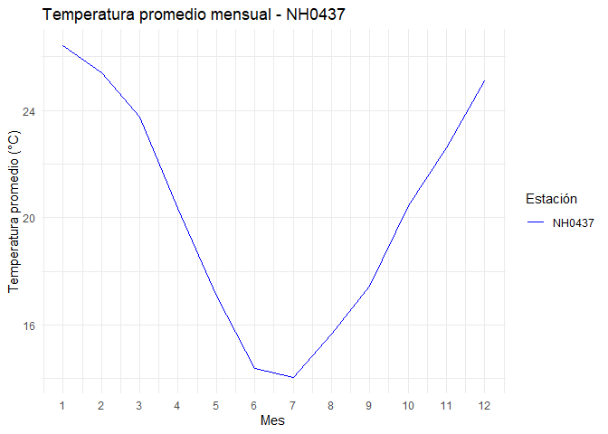

estacionesINTA es un paquete de R para descargar, leer, resumir y graficar datos de estaciones meteorológicas del INTA. Fue desarrollado como ejercicio práctico de la materia Programación II, para aprender a construir paquetes de R y trabajar de forma colaborativa con Git y GitHub.
Advertencia
Este paquete es únicamente de prueba y tiene fines educativos.
No está pensado para su utilización real ni para su distribución como herramienta de análisis meteorológico.
Funciones
El paquete incluye:
-
leer_estacion(): descarga y lee los datos de una estación meteorológica. -
tabla_resumen_temperatura(): calcula el promedio y el desvío estándar de la temperatura por estación. -
grafico_temperatura_mensual(): grafica la temperatura promedio mensual de una o más estaciones.
Además trae el set de datos estacion_nh0437, con los registros diarios de la estación NH0437 entre 1970 y 2023.
Instalación
Podés instalar la versión en desarrollo de estacionesINTA desde GitHub con:
# install.packages("pak")
pak::pak("MicaelaGermi04/estacionesINTA")Ejemplo de uso
Para descargar y leer los datos de una estación, indicá su código y la ruta donde guardar el archivo:
library(estacionesINTA)
estacion <- leer_estacion("NH0437", "NH0437.csv")El paquete incluye los datos de la estación NH0437, así que podés probar las funciones sin descargar nada. Por ejemplo, para obtener el promedio y el desvío estándar de la temperatura:
library(estacionesINTA)
tabla_resumen_temperatura(estacion_nh0437)
#> # A tibble: 2 × 3
#> id estadistico valor
#> <chr> <chr> <dbl>
#> 1 NH0437 promedio_temperatura 20.2
#> 2 NH0437 desvio_estandar 5.77Y para graficar la temperatura promedio de cada mes:
grafico_temperatura_mensual(estacion_nh0437,
colores = "blue",
titulo = "Temperatura promedio mensual - NH0437")